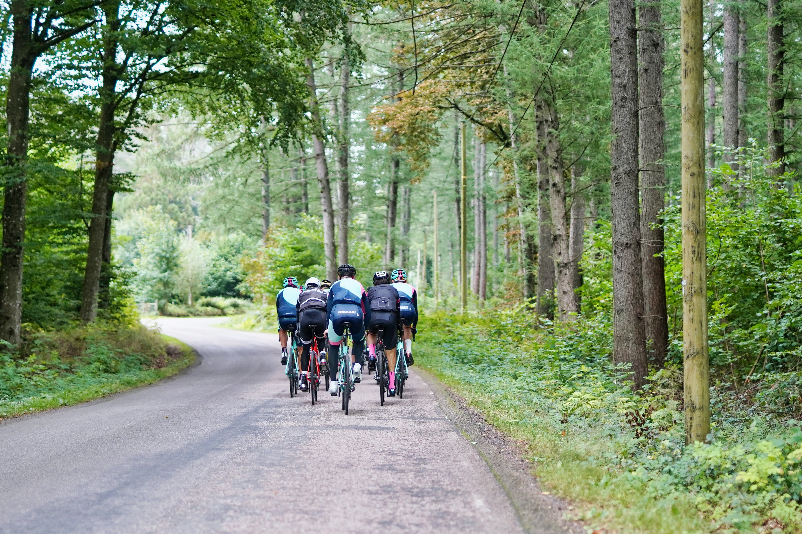
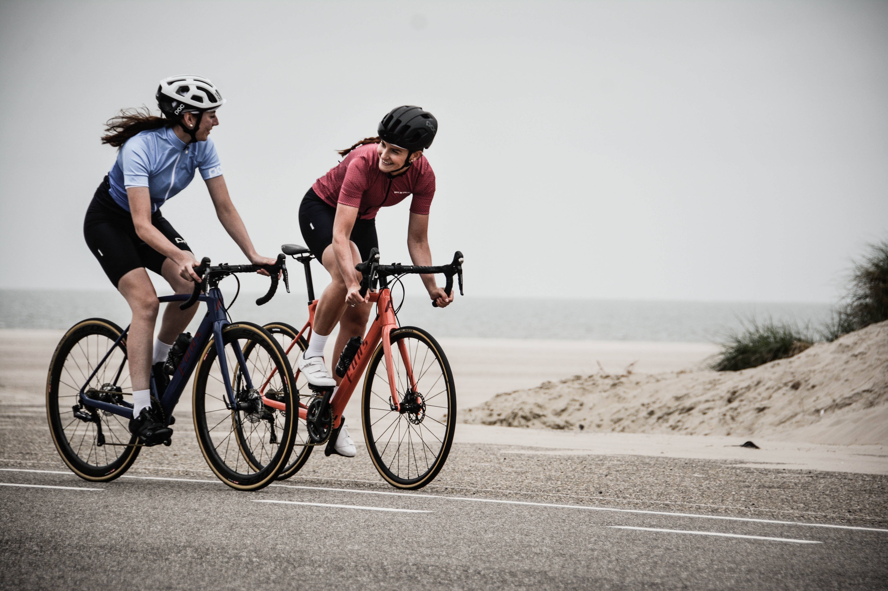
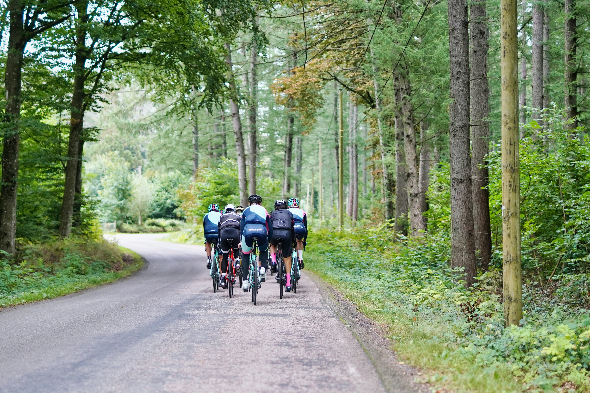
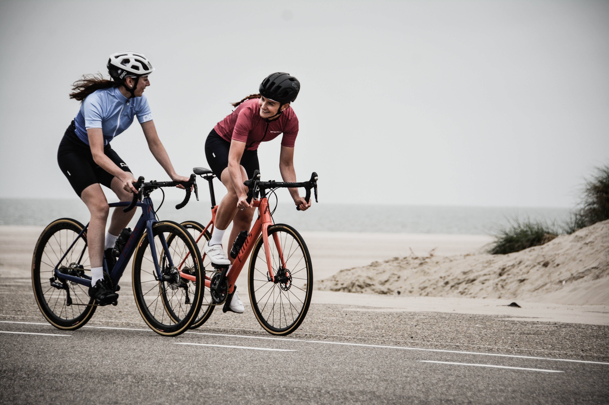
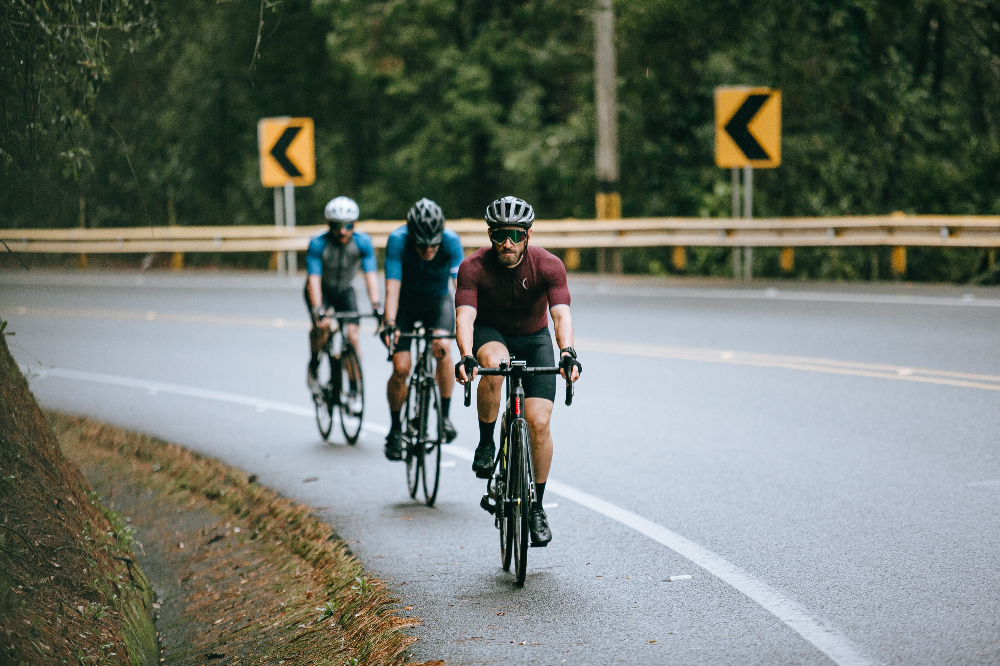
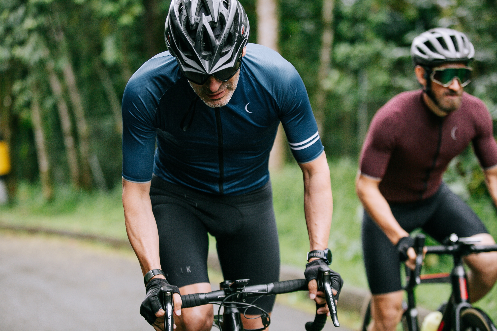

About
This website is a resource for those keen on the non-competitive style of cycling known as Audax, particularly those based in Cornwall.
Audax events, sometimes known as Randonnées, are organised throughout the year and are open to all cyclists. Distances covered in these events range from 50km (about 30 miles) to 1400km (800+ miles), and various points in between. These events are organised under the rules of Audax UK, a national body which regulates our sport. You don’t have to be a member of Audax UK to participate in events, but non-members must pay a small fee in addition to the event entry fee to cover third party insurance costs.
Members of AUK (join here) benefit from a quarterly magazine packed with write ups of events at home and abroad, and a great deal of other useful information and news.
Although fundamentally a non-competitive activity (no finishing times or positions are published – to complete the event within a defined time limit is the main aim of participants), various award schemes exist within AUK – some celebrate the completion of rides at the longer end of the scale, others recognise those who choose to ride the shorter events, but who do so regularly. Whatever your cycling background – time trialist, club racer, keen cyclo-tourist or simply someone who enjoys a day out in the saddle in the company of others, Audax has something to offer. Take a look at our Forthcoming Events links and join us soon.
Happy cycling, and see you on the road…
 



"A bad day on a mountain bike always beats a good day in the office."
-Tristan H. - financial advisor/frequent runner since 2019

